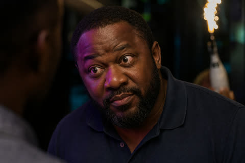
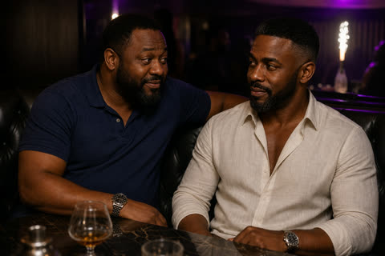

Medium0:03
Tunde was telling the goat story again.
The goat storySkip
action in The goat storyTundeAde
Chapter 1 · Gold on Gold
Tunde was telling the goat story again.
0:03 · The goat storyAde had been in the car the first time it happened, on the Ibadan expressway in 2004, and he had heard it told since at two weddings, one naming ceremony and Tunde’s fortieth, and every time the goat grew larger and the customs officer more corrupt and Tunde’s cousin from Ilesha more heroic. Tonight the goat had learned to open doors.
“It is not possible,”
Ade said.
“Ade, I am telling you. The goat looked at me like this —”
Tunde widened his eyes and lowered his chin, and the effect, under the purple lights of the club, was so exactly that of an offended goat that Ade had to put his glass down.

0:37“— like say na me get the car.”
“The goat was in the boot, Tunde.”
“Ehn-ehn. The goat was in the boot [emphasis] spiritually,”
Tunde said.
“Physically, he was in front.”
Ade laughed until his chest hurt. It was the laugh only Tunde could get out of him: undignified, helpless, a laugh that belonged to the boy he had been at Unilag, sharing a room in Mariere Hall with a boy who could not cook and would not stop talking.
Around them the club pressed on in the way Victoria Island clubs did after midnight: an amapiano log drum thudding up through the floor, the DJ shouting somebody’s birthday into the microphone, bottle girls threading between tables with sparklers held high over magnums of champagne, so that every few minutes one corner of the room went white and celebratory and then dark again. Tunde had chosen the place. Tunde had chosen the table, a low leather booth near enough the dance floor to be seen and far enough to be heard, and had ordered without consulting anyone. When the waitress came back with the card machine, Ade already had his card out. Tunde did not pause in his story. Neither of them looked at the total.
1:20 · The club after midnightIt had been like that for twenty years.
“You should come out more,” Tunde said, when the goat had finally been delivered to its owner in Ilesha. “Look at you. You’re enjoying yourself and you don’t even want to admit it.”

2:05Ade laughed until his chest hurt. It was the laugh only Tunde could get out of him: undignified, helpless, a laugh that belonged to the boy he had been at Unilag, sharing a room in Mariere Hall with a boy who could not cook and would not stop talking.
Around them the club pressed on in the way Victoria Island clubs did after midnight: an amapiano log drum thudding up through the floor, the DJ shouting somebody’s birthday into the microphone, bottle girls threading between tables with sparklers held high over magnums of champagne, so that every few minutes one corner of the room went white and celebratory and then dark again. + PictureTunde had chosen the place. Tunde had chosen the table, a low leather booth near enough the dance floor to be seen and far enough to be heard, and had ordered without consulting anyone. When the waitress came back with the card machine, Ade already had his card out. Tunde did not pause in his story. Neither of them looked at the total.
1:20 · The club after midnightIt had been like that for twenty years.
“You should come out more,” Tunde said, when the goat had finally been delivered to its owner in Ilesha. “Look at you. You’re enjoying yourself and you don’t even want to admit it.”
2:05Ade laughed until his chest hurt. It was the laugh only Tunde could get out of him: undignified, helpless, a laugh that belonged to the boy he had been at Unilag, sharing a room in Mariere Hall with a boy who could not cook and would not stop talking.
Around them the club pressed on in the way Victoria Island clubs did after midnight: an amapiano log drum thudding up through the floor, the DJ shouting somebody’s birthday into the microphone, bottle girls threading between tables with sparklers held high over magnums of champagne, so that every few minutes one corner of the room went white and celebratory and then dark again. Tunde had chosen the place. Tunde had chosen the table, a low leather booth near enough the dance floor to be seen and far enough to be heard, and had ordered without consulting anyone. When the waitress came back with the card machine, Ade already had his card out. Tunde did not pause in his story. Neither of them looked at the total.
1:20 · The club after midnight1:48It had been like that for twenty years.
Tunde was telling the goat story again.
Around them the club pressed on in the way Victoria Island clubs did after midnight: an amapiano log drum thudding up through the floor…
Ade had left a pot of ofada stew on the cooker at home, enough for two days, or two people.
Gold on gold. Heavy bangles knocking together on a wrist, and something at an ear that answered them when a head turned.
She had sat down among friends — two women, and a man who kept leaning towards her and being, quite gently, ignored.
Tunde stared at him. Then he put a hand flat on the table and laughed until he coughed.
The dance floor was full, and crossing it took longer than it should have.
Her friends saw him first. One said something and the other laughed.
The music was loud and she spoke softly, so he had to lean in to hear her.
He knew he had been in the middle of a sentence. He knew roughly where it had been going. He could not find a single word of it.
In the kitchen the ofada stew sat on the cooker where he had left it, covered, cold. Beside it, a pot of rice, enough for two.
He thought about her mouth when she had imitated him. He thought about the gold at her ear swinging against her jaw…